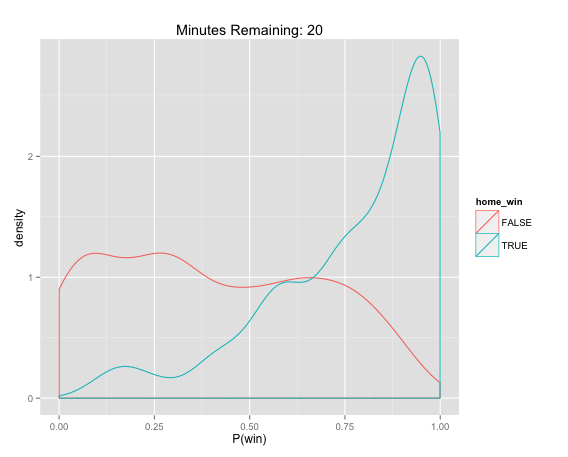
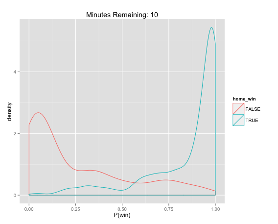
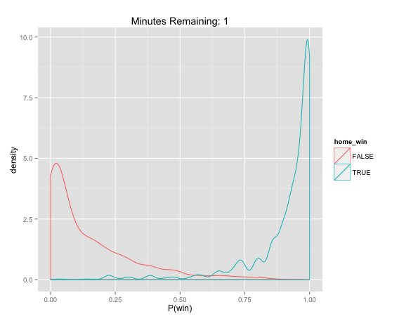
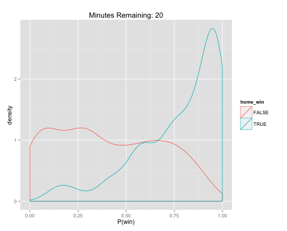
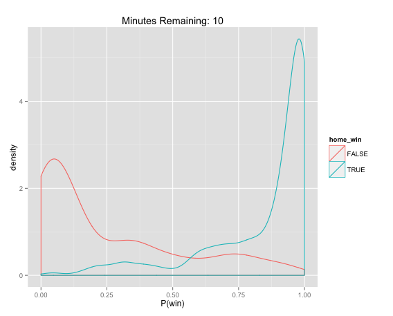
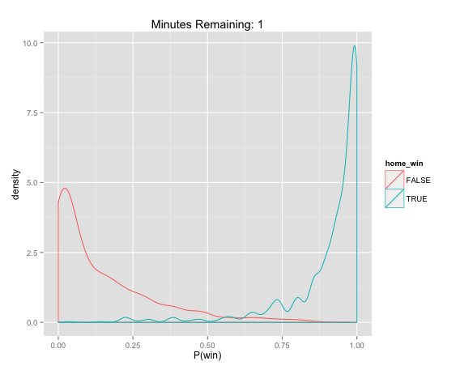
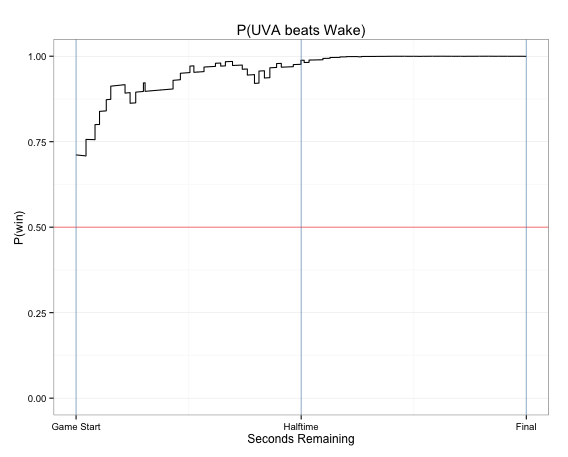

NCAA Win Probabilities Tweet
by
This is the analysis and code for the NCAA win probability app (which doesn't exist yet). For now, you can check out the results here.
Building a win probability model
With March Madness quickly approaching, I thought it would be fun to dig into some NCAA basketball data. For this post, I'm going to be building a win probability model. The basic idea being that we'll be predicting who will win a game based on the "state" of the game. For us the state consists of:
- time left in the game
- home team score
- away team score
- interactions between the above
Data
Our data starts looking like this. The key ingredients here are the scores, teams, and the time remaining in each game. We'll need to do a bit of munging and formatting (for example, adding a column to indicate who won the game), but it's in pretty good shape.
| gameid | away | home | away_score | home_score | seconds_remaining | half | gamedate |
|---|---|---|---|---|---|---|---|
| Wake Forest|Virginia|2014-01-08 | Wake Forest | Virginia | 0 | 0 | 2382 | 1 | 2014-01-08 |
| Wake Forest|Virginia|2014-01-08 | Wake Forest | Virginia | 0 | 0 | 2369 | 1 | 2014-01-08 |
| Wake Forest|Virginia|2014-01-08 | Wake Forest | Virginia | 0 | 2 | 2347 | 1 | 2014-01-08 |
| Wake Forest|Virginia|2014-01-08 | Wake Forest | Virginia | 0 | 2 | 2324 | 1 | 2014-01-08 |
| Wake Forest|Virginia|2014-01-08 | Wake Forest | Virginia | 0 | 2 | 2324 | 1 | 2014-01-08 |
| Wake Forest|Virginia|2014-01-08 | Wake Forest | Virginia | 0 | 4 | 2299 | 1 | 2014-01-08 |
Creating states
In addition to adding a couple of derived fields, we're also going to enumerate every possible second and the score at that time. What this boils down to is having a score for each timepoint in the game. So from the beginning of the game where there are 2400 seconds remaining, to the end of the game when there are 0 seconds remaining, we'll have a home and away score.
This is very easy to do in SQL. Joins make this relatively fast and straightforward. You can check out the query here.
| gameid | seconds_remaining | away | home | away_score | home_score | home_win | |
|---|---|---|---|---|---|---|---|
| 441 | Wake Forest|Virginia|2014-01-08 | 1951 | Wake Forest | Virginia | 6.00 | 15.00 | 1 |
| 442 | Wake Forest|Virginia|2014-01-08 | 1950 | Wake Forest | Virginia | 6.00 | 15.00 | 1 |
| 443 | Wake Forest|Virginia|2014-01-08 | 1949 | Wake Forest | Virginia | 6.00 | 15.00 | 1 |
| 444 | Wake Forest|Virginia|2014-01-08 | 1948 | Wake Forest | Virginia | 6.00 | 15.00 | 1 |
| 445 | Wake Forest|Virginia|2014-01-08 | 1947 | Wake Forest | Virginia | 6.00 | 15.00 | 1 |
| 446 | Wake Forest|Virginia|2014-01-08 | 1946 | Wake Forest | Virginia | 6.00 | 15.00 | 1 |
| 447 | Wake Forest|Virginia|2014-01-08 | 1945 | Wake Forest | Virginia | 6.00 | 15.00 | 1 |
| 448 | Wake Forest|Virginia|2014-01-08 | 1944 | Wake Forest | Virginia | 6.00 | 15.00 | 1 |
So you can see that for each second of each game we have a single row that indicates the score and who ultimately wins the game.
R or Python?
I couldn't decide whether to use R or Python. I wanted Python for it's munging
capabilities but I find the glm capabilities of R to be far superior. I wound
up just trying it up both!
Building the Model
We're going to use logistic regression. It's simple, fast (we have ~3M rows), and it'll be easy to interpret the results.
df <- read.csv("./data.csv", stringsAsFactors=F)
fit <- glm(home_win ~ seconds_remaining * away_score * home_score, data=df, family=binomial())
summary(fit)
Estimate Std. Error z value Pr(>|z|)
(Intercept) 2.61e-01 3.98e-02 6.57 5.1e-11 ***
seconds_remaining 2.67e-04 1.72e-05 15.56 < 2e-16 ***
away_score -3.53e-01 1.08e-03 -326.36 < 2e-16 ***
home_score 3.38e-01 1.06e-03 317.88 < 2e-16 ***
seconds_remaining:away_score 9.75e-05 6.01e-07 162.12 < 2e-16 ***
seconds_remaining:home_score -9.14e-05 5.97e-07 -152.91 < 2e-16 ***
away_score:home_score 1.88e-04 1.33e-05 14.13 < 2e-16 ***
seconds_remaining:away_score:home_score -3.54e-08 6.76e-09 -5.24 1.6e-07 ***
So our fit here looks good. Standard error is at least 10x smaller than the estimated coeffecient for each term. You can also see that when we create variables that use both the score and the time remaining at the same time, we're still seeing strong relationships. This makes sense, right? As the game gets closer to finishing, you should get more value out of knowing the score.
You can see that as you get deeper into the game, the win probability distributions begin to seperate.
 





The Results
What we really want to do is generate in game win probabilities. If everything
is working correctly, we should see P(win) converge towards 1.0 or 0.0 as time
elapses. To see how our model is working, let's take a look at Wake Forest @ UVA
game from January 8th.
If we plot the win probability for each second in the game, UVA's win in-game win probability looks like this:
wake.at.uva <- subset(df, gameid=="Wake Forest|Virginia|2014-01-08")
ggplot(aes(x=seconds_remaining, y=win_prob), data=wake.at.uva) +
geom_step() +
geom_hline(y=0.5, alpha=0.5, colour="red") +
geom_vline(x=c(60*40, 60*20, 0), alpha=0.5, colour="steelblue") +
scale_x_reverse("Seconds Remaining", limits=c(2400, 0),
breaks=c(2400, 1200, 0), labels=c("Game Start", "Halftime", "Final")) +
scale_y_continuous("P(win)", limits=c(0, 1)) +
ggtitle("P(UVA beats Wake)") +
theme_bw()
